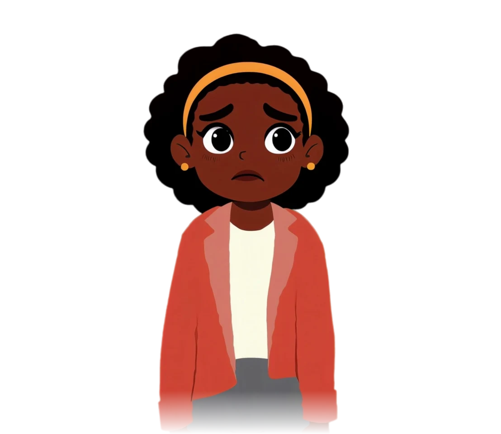

IELTS · VocabularyPick the missing word
Pick the missing word

Almost!
edit
I like salary to music
Acancel
salarymoney you get every month for your jobYour answer
volume_up
B
key carda plastic card that opens a door
volume_up
Ccheck_circle
listeningthe act of paying attention to soundCorrect choice
volume_up
D
considerto think carefully about something
volume_up
close
Not quiteCorrect answer: listening
14-day streak
AMA · YOUR TEACHER
listening/ˈlɪs.ən.ɪŋ/
the act of paying attention to sound